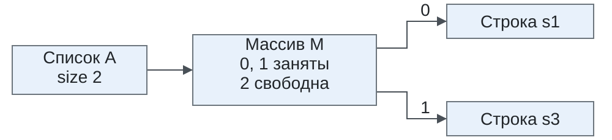
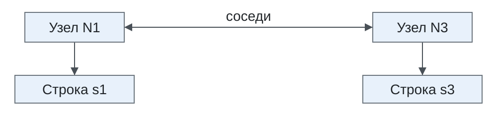

Интерфейсы, реализации и порядок обхода коллекций.
Общий алгоритм, состояние итератора и сравнение протоколов обхода.
Идентичность, равенство, хеширование и порядок.
Линейный поиск, хеш-таблица и дерево.
Хранение, стоимость операций и изменение состава.
Представления, копии и выбор структур для каталога.
Отношения между элементами
В журнал поступили коды участников s1, s2, s1.
Интерфейс
Сохраняемые сведения
Операция
List<E>
Все вхождения и их позиции: [s1, s2, s1]
Прочитать позицию
Set<E>
Наличие кодов: {s1, s2}
Проверить принадлежность
Queue<E>
Элементы, ожидающие обработки
Получить голову
Map<K,V>
Соответствия: s1 → 2, s2 → 1
Найти значение по ключу
E обозначает тип элемента, K — ключа, V — значения. У очереди голову определяет дисциплина обработки: порядок поступления или приоритет. Преобразование журнала в множество удаляет сведения о числе и позициях повторений.
Иерархия интерфейсов
Collection объединяет размер, проверку наличия и обход элементов. Iterable предоставляет получение итератора. SequencedCollection добавляет определённый порядок обхода и доступ к обоим концам.
%%{init: {"htmlLabels": false, "flowchart": {"htmlLabels": false}, "fontSize": 28, "fontFamily": "Arial, sans-serif", "themeVariables": {"fontSize": "28px", "fontFamily": "Arial, sans-serif"}, "class": {"hideEmptyMembersBox": true}}}%%
classDiagram
direction LR
Iterable <|-- Collection
Collection <|-- Set
Collection <|-- SequencedCollection
Collection <|-- Queue
SequencedCollection <|-- List
SequencedCollection <|-- Deque
Queue <|-- Deque
Set <|-- SequencedSet
SequencedCollection <|-- SequencedSet
Все узлы — интерфейсы; треугольник указывает на расширяемый интерфейс. Deque объединяет очередь и оба конца, SequencedSet — уникальность и порядок обхода. Семейство Sequenced* доступно с Java 21.
Отображение и его коллекции
Map<K,V> связывает ключ со значением. Она имеет отдельный интерфейс: для get(key) достаточно ключа, для put(key, value) нужны обе части.
Стрелки обозначают получение представления данных карты. Каждое из трёх представлений допускает общий обход элементов. Сам Map не расширяет Collection или Iterable. [10]
Интерфейс и реализация
Интерфейс задаёт операции и их смысл. Класс реализации определяет способ хранения.
Интерфейс клиента
Классы
Основа хранения
List
ArrayList, LinkedList
Массив ссылок, связанные узлы
Deque
ArrayDeque, LinkedList
Массив, связанные узлы
Set
HashSet, TreeSet
Хеш-таблица, дерево
Map
HashMap, TreeMap
Хеш-таблица, дерево
LinkedHashSet и LinkedHashMap дополнительно поддерживают связи для порядка обхода. LinkedList реализует и List, и Deque.
List<String> codes =newArrayList<>();codes.add("s1");String first = codes.get(0);// s1
Замена конструктора на new LinkedList<>() сохраняет эти операции и меняет устройство доступа. Реализации и абстрактные основы.
Единый договор библиотек
Загрузчик возвращает List<String>, а отчёт принимает List<String>. Обе библиотеки согласуют тип элементов, позиции и операции списка. Операции List скрывают внутренний массив или узлы от клиентского кода.
Совместимость независимо написанных API была целью Collections Framework. Разработчики выбрали небольшую систему основных интерфейсов; прежние Vector и Hashtable приспособили к ней. [15]
Изменяющие операции могут быть необязательными. Например, List допускает объекты с запрещённым изменением состава; разрешённые действия определяются также договором конкретного объекта. Такое решение ограничило число вариантов интерфейсов. [10]
Общий договор порядка
У списка есть порядок позиций, у LinkedHashSet — порядок добавления, у TreeSet — порядок сравнения. До Java 21 общий тип Collection терял сведения о порядке, а List исключал множества.
SequencedCollection позволяет принимать все три вида через один тип: получать первый и последний элементы, обходить в обратном порядке. SequencedMap задаёт соответствующие возможности для отображений. [14]
Порядок обхода этого множества определяется добавлением кодов. Числовых позиций get(i) интерфейс SequencedCollection не вводит.
Последовательный обход
Источник элементов Iterable и состояние Iterator.
Один алгоритм для разных хранилищ.
Независимые обходы и цикл for-each.
Продвижение, чтение и конец диапазона в Java, C++ и C#.
Источник и состояние обхода
Iterable<String> предоставляет метод iterator(), возвращающий Iterator<String>. Полученный объект хранит состояние одного обхода.
%%{init: {"htmlLabels": false, "flowchart": {"htmlLabels": false}, "fontFamily": "Arial, sans-serif", "themeVariables": {"fontSize": "28px", "fontFamily": "Arial, sans-serif"}}}%%
flowchart LR
C["codes: источник строк"] -->|"iterator()"| I["it: состояние обхода"]
I -->|"next()"| E["очередная строка"]
hasNext() проверяет, есть ли ещё элемент. next() возвращает следующий элемент и продвигает обход. После исчерпания hasNext() даёт false, а next() выбрасывает NoSuchElementException. [6], [11]
Алгоритм чтения кодов
Метод печатает строки по одной и не вызывает операций изменения коллекции:
staticvoidprintCodes(Iterable<String> codes){Iterator<String> it = codes.iterator();while(it.hasNext()){String code = it.next();System.out.println(code);}}
Алгоритму нужны только получение итератора и выдача следующих строк. В итераторе ArrayList продвижение связано с позицией массива, в итераторе LinkedList — с переходом к следующему узлу.
Одинаковый алгоритм, разные коллекции
var input =List.of("s1","s2","s1");printCodes(newArrayList<>(input));printCodes(newLinkedList<>(input));printCodes(newLinkedHashSet<>(input));
Конструкторы создают коллекции из вхождений input.
Переданный объект
Строки вывода по порядку
ArrayList
s1, s2, s1
LinkedList
s1, s2, s1
LinkedHashSet
s1, s2
Множество сохраняет первое появление каждого кода. Повтор исчезает при создании множества; тело printCodes одинаково во всех трёх вызовах.
Два итератора одного списка
Новый список содержит три разных кода и во время опыта не меняется:
var codes =newArrayList<>(List.of("s1","s2","s3"));Iterator<String> first = codes.iterator();Iterator<String> second = codes.iterator();
Черта отделяет уже выданный префикс от оставшихся элементов. Это два положения в одном списке. Предскажите результаты first.next(), ещё одного first.next(), затем second.next().
for(Iterator<String> it = codes.iterator(); it.hasNext();){String code = it.next();System.out.println(code);}
При обходе Iterable расширенный for получает собственный итератор. У массива эта форма цикла использует последовательные индексы; массив не реализует Iterable. [16]
Обход диапазона в C++
Те же коды в std::vector<std::string>:
std::vector<std::string> codes{"s1","s2","s3"};for(auto it = codes.begin(); it != codes.end();++it){std::cout <<*it <<'\n';}
begin() обозначает первую позицию, end() — границу за последней. *it читает элемент, ++it продвигает позицию. Конец не разыменовывается. Вывод — s1, s2, s3.
Шаблонный алгоритм может принимать итераторы разных контейнеров. Для последовательной печати подходят и vector, и list; переход сразу на произвольное смещение требует более сильных возможностей итератора. [21]
Перечислитель в C#
В C# IEnumerable<T> задаёт источник элементов типа T, а IEnumerator<T> — перечислитель с собственным состоянием обхода. string обозначает строку. Список строк в .NET 10 обходится так:
IEnumerable<string> codes =new List<string>{"s1","s2","s3"};using(IEnumerator<string> it = codes.GetEnumerator()){while(it.MoveNext()){ Console.WriteLine(it.Current);}}
MoveNext() сначала продвигается, затем сообщает об успешном переходе. Current — свойство, читающее текущий элемент без продвижения. Вывод — s1, s2, s3. using вызывает Dispose() при выходе из блока, завершая использование перечислителя. [2]
Продвижение и завершение
Состав последовательности [s1, s2, s3] во время обхода сохраняется:
Состояние
Java Iterator
C++ vector::iterator
C# IEnumerator
Начало
Следующий — s1
*begin() — s1
Перед первым; Current ещё не определён
Один элемент прочитан
next() выдал s1
*it прочитан; ++it ведёт к s2
MoveNext() дал true; Current — s1
Завершение
hasNext() — false
it == end()
MoveNext() — false; Current не определён
Java и C# выражают общий протокол интерфейсами. C++ задаёт требования к операциям типа итератора при использовании шаблонного алгоритма. Протоколы обхода в C++ и C#.
Равенство при поиске
Идентичность, равенство значения и хеш.
Естественный и внешний порядок.
Линейный поиск и отбор кандидатов в хеш-таблице.
Повтор равного ключа, коллизия и изменение ключа.
Операции сравнения
Операция
Какой вопрос решает
Где задано правило
a == b для ссылок
Это один объект?
В языке Java
a.equals(b)
Это одно значение?
В классе; исходный метод — в Object
a.hashCode()
К каким кандидатам направить поиск?
В классе; согласовано с equals
a.compareTo(b)
Как расположить значения типа?
Comparable<T> в самом типе
order.compare(a, b)
Как расположить их в этой задаче?
Отдельный Comparator<T>
Хеш возвращает int; равные значения обязаны иметь равные хеши. Порядок возвращает знак: меньше нуля, ноль или больше нуля. Система операций сравнения.
Ссылки на равные строки
String a =newString("Ada");String b =newString("Ada");String alias = a;
Два объекта содержат одинаковые символы. Для поиска имени существенно содержимое строки; для проверки общего объекта — идентичность ссылок. Каковы результаты a == b, a.equals(b) и alias == a?
== над ссылками проверяет общий объект. String.equals сравнивает содержимое, поэтому два разных объекта могут представлять одно значение. Унаследованный Object.equals сохраняет проверку идентичности; класс значения переопределяет этот метод.
Objects.equals сравнивает значения и обрабатывает null: два null равны, ровно один — различается с существующим значением. При первом совпадении поиск завершается; при исчерпании входа возвращает false. Требуется только последовательный обход.
Последовательность проверок
Для исходных кодов [s1, s2, s1]:
Запрос
Первый s1
s2
Последний s1
Результат
s2
Не равен
Равен
Не читается
true
s9
Не равен
Не равен
Не равен
false
var codes =List.of("s1","s2","s1");System.out.println(containsCode(codes,"s2"));// trueSystem.out.println(containsCode(codes,"s9"));// false
В худшем случае проверяются все \(n\) элементов. Чтобы сократить область поиска, хеш-таблица заранее размещает ключи по их хешам.
Устойчивый идентификатор
StudentId хранит строку кода, отличную от null, без нормализации. Его equals сравнивает строки с учётом регистра, hashCode возвращает хеш этой строки. Класс закрыт для наследования, состояние сохраняется.
StudentId first =newStudentId("s17");StudentId second =newStudentId("s17");System.out.println(first == second);// falseSystem.out.println(first.equals(second));// trueSystem.out.println(first.hashCode()== second.hashCode());// true
Равенство должно быть симметричным, транзитивным и устойчивым при неизменных данных. equals(null) возвращает false. Объявление класса; полный договор: Соглашение equals.
Одинаковый хеш направил поиск к сохранённому ключу; equals подтвердил совпадение. HashSet оставил одного представителя значения s17. Для HashMap найденный равный ключ означает уже существующее соответствие: повторный put заменяет его значение.
Коллизия
У строк Aa и BB одинаковый хеш 2112. Карта сохраняет оба ключа:
Коллизия — совпадение хешей неравных объектов. Равенство различает ключи, поэтому оба соответствия сохранены.
Отбор кандидатов по хешу
В HashMap OpenJDK jdk-25-ga после этих вставок 16 ячеек. Смешанный хеш 2112 ^ (2112 >>> 16) равен 2112; индекс (16 - 1) & 2112 равен 0.
%%{init: {"htmlLabels": false, "flowchart": {"htmlLabels": false, "rankSpacing": 20, "padding": 8}, "fontSize": 28, "fontFamily": "Arial, sans-serif", "themeVariables": {"fontSize": "28px", "fontFamily": "Arial, sans-serif"}}}%%
flowchart LR
Q["Запрос BB:<br/>hash 2112"] --> B["Ячейка<br/>0"]
B --> A["Aa:<br/>hash 2112"]
A -->|"equals:<br/>false"| C["BB:<br/>hash 2112"]
C -->|"equals:<br/>true"| V["Значение<br/>2"]
Сначала проверяется сохранённый хеш узла, затем совпадение ссылки или equals. В одну ячейку могут попасть ключи с разными полными хешами; совпадающие хеши могут принадлежать неравным ключам. [25]
Повтор равного ключа
В карте collisions повторный put возвращает прежнее значение.
Поиск дошёл до узла BB; обновилось его значение. Нового соответствия не возникло. В этой реализации узел также сохраняет прежний объект ключа. [25]
Изменение сведений участника
Запись grade.Student хранит код id, имя name и целый score от 0 до 100. Методы id(), name() и score() читают эти компоненты.
Student before =newStudent("s1","Ada",90);Student after =newStudent("s1","Ada",95);System.out.println(before.equals(after));// falseSystem.out.println(before.id().equals(after.id()));// true
Новая оценка представлена новым объектом. Стандартное равенство записи учитывает все компоненты, а код каталога сохранился. Запись участника учебного журнала.
Изменяемый ключ
В диагностическом типе доступна запись в данные равенства:
finalclass MutableKey {int code;MutableKey(int code){this.code= code;}@Overridepublicbooleanequals(Object other){return other instanceof MutableKey k && code == k.code;}@OverridepublicinthashCode(){return code;}}
При текущем code методы согласованы. Для хранения ключа нужно также, чтобы эти данные оставались устойчивыми после вставки.
Новый хеш 2 направляет get в пустую ячейку 2. Узел остался в ячейке 1; присваивание полю ключа не вызвало переноса записи. Общий договор Map не определяет результат после изменения данных равенства ключа. [24], [25]
Обход сохранённых пар
var entry = broken.entrySet().iterator().next();System.out.println(entry.getKey()== key);// trueSystem.out.println(entry.getValue());// stored
entrySet() предоставляет пары карты, iterator().next() получает единственную пару, getKey() и getValue() читают её части. Итератор этой HashMap посещает размещённые узлы без нового вычисления хеша ключа. Поэтому обход обнаруживает запись, пропущенную поиском. [25]
Устойчивые данные ключа
final у переменной key сохраняет ссылку; её объект оставался изменяемым. У StudentId сохраняются и ссылка, и неизменяемая строка кода:
Map<StudentId, Student> catalog =newHashMap<>();StudentId id =newStudentId("s1");catalog.put(id,newStudent("s1","Ada",90));catalog.put(id,newStudent("s1","Ada",95));System.out.println(catalog.get(newStudentId("s1")).score());// 95System.out.println(catalog.size());// 1
Обновилось значение карты под прежним ключом. Если ключ содержит изменяемые вложенные данные, устойчивость требует их собственного снимка. Глубина снимка ключа.
Равенство, выбранное коллекцией
Коды s1 и S1 должны означать один ключ, хотя обычное строковое равенство их различает. Правило равенства и согласованный хеш задаются типом ключа или выбираются для отдельной коллекции:
Библиотека
Где задаётся равенство
Где задаётся согласованный хеш
Java HashSet<T>
T.equals
T.hashCode
C++20 unordered_set<T, Hash, Pred>
Объект Pred
Объект Hash
.NET10 HashSet<T>
IEqualityComparer<T>.Equals
Тот же объект: GetHashCode
В Java можно создать тип ключа, сохраняющий нормализованный код. C++ и .NET позволяют передать коллекции внешнее правило для строк. Изменение равенства требует согласованного изменения хеширования. [3], [19]
Регистр строк в C#
В C# интерфейс IEqualityComparer<T> объединяет две операции над значениями типа T. Готовый StringComparer.OrdinalIgnoreCase сравнивает строки без учёта регистра и предоставляет согласованный хеш:
var codes =new HashSet<string>(StringComparer.OrdinalIgnoreCase);Console.WriteLine(codes.Add("s1"));// TrueConsole.WriteLine(codes.Add("S1"));// FalseConsole.WriteLine(codes.Count);// 1
Count — свойство с числом элементов. Отдельный HashSet<string>() с обычным правилом сохранил бы оба кода. Коды в примере состоят из ASCII-символов. Правила сопоставления регистра для Unicode определяет выбранная библиотека. Полная пара методов: собственный компаратор. [1], [5]
Порядок и уникальность
Естественный порядок и внешний компаратор.
Сортировка списка и устойчивость.
Направление поиска по знаку сравнения.
Ноль сравнения и уникальность в TreeSet.
Ключ каталога и порядок отчёта.
Естественный порядок
Comparable<T> задаёт метод int compareTo(T other):
Отрицательный результат означает «раньше», положительный — «позже», ноль — одно положение по сравнению. Существенен знак, точные −1 и 1 не требуются. String сравнивает кодовые единицы UTF-16; после общего s символ 1 предшествует 2. Языковой алфавитный порядок требует сравнения с учётом локали.
Внешнее правило порядка
Ведомость требует сначала больший балл, при ничьей — меньший код. Этот порядок применяется к полным сведениям участников и позволяет показать рядом разные записи с одинаковыми баллами.
Comparator<Student> задаёт сравнение для выбранного отчёта:
Обратный порядок аргументов Integer.compare ставит больший балл раньше. Код сравнивается только при равенстве баллов. equals записи сохраняет своё правило по всем компонентам.
Сортировка списка
var rows =newArrayList<>(List.of(newStudent("s3","Ann",90),newStudent("s2","Lin",70),newStudent("s1","Ada",90)));rows.sort(newReportOrder());for(Student row : rows)System.out.println(row.id());// s1// s3// s2
Сортировка вызывает compare и переставляет ссылки в списке. Все три вхождения сохранены. При нуле сравнения стабильная List.sort сохраняет взаимный порядок исходных вхождений.
Направление поиска в дереве
В модели бинарного дерева кодов действует естественный порядок строк. Слева от узла расположены меньшие ключи, справа — большие:
Для запроса s3 сравнение с s2 положительно — поиск идёт вправо. Сравнение с s3 даёт ноль — ключ найден. Запрос s0 идёт влево от s2, затем влево от s1; пустая ветвь означает отсутствие ключа.
У TreeSet направление задаёт compareTo или переданный Comparator. Нулевой результат одновременно определяет совпадение элементов. [9]
Ноль сравнения в TreeSet
Comparator<Student> byScore =newComparator<>(){publicintcompare(Student a, Student b){returnInteger.compare(a.score(), b.score());}};Student a =newStudent("s1","Ada",90);Student b =newStudent("s2","Lin",90);var set =newTreeSet<Student>(byScore);set.add(a);
TreeSet использует знак сравнения для поиска, ноль — для совпадения. Предскажите a.equals(b), set.add(b) и set.contains(b).
Участники различаются по данным, но оба имеют балл 90. При нулевом результате сравнения дерево считает b уже имеющимся элементом. В дереве остался a. Список при сортировке тем же правилом сохранил бы обоих участников.
Для соблюдения общего договора Set требуется compare(a, b) == 0 тогда и только тогда, когда a.equals(b). [9]
Ключ каталога и порядок отчёта
Для Student("s1", "Ada", 90) и Student("s1", "Grace", 90) компаратор по баллу и коду тоже даёт ноль, хотя equals ложно. Согласованное со всеми компонентами сравнение должно учитывать ещё имя.
поиск и обновление по коду: Map<StudentId, Student>все строки ведомости: List<Student> + ReportOrder
var array =newArrayList<String>(3);array.add("s1");array.add("s3");

Объект списка хранит ссылку на массив. Позиции массива хранят ссылки на строки; свободная позиция не входит в размер списка. Вставка array.add(1, "s2") должна сохранить порядок s1, s2, s3.
Ссылка на s3 перемещена из позиции 1 в позицию 2, в освободившуюся позицию записана ссылка на s2. Массив M и строки s1, s3 сохранились. Индекс сразу задаёт место вставки; освобождение этого места требует сдвига.
Рост массива
Другой список получает те же коды, но резерв равен 2:
var tight =newArrayList<String>(2);tight.add("s1");tight.add("s3");tight.add(1,"s2");System.out.println(tight);// [s1, s2, s3]
до: список T → массив M: [s1, s3] size = 2рост: список T → новый массив N, места не меньше 3после: список T → массив N: [s1, s2, s3] size = 3
Рост выделяет больший массив и переносит прежние ссылки. Сам список T и объекты строк сохраняются. Длина отдельного массива постоянна; коэффициент роста внутреннего массива API ArrayList не фиксирует. [22]
Стоимость ArrayList
В списке \(n\) элементов, позиция вставки имеет индекс \(i\).
Действие
Работа с хранилищем
get(i), set(i, e)
Индексация массива: \(O(1)\)
Вставка в позицию i
Сдвиг хвоста: \(O(n-i)\) плюс возможный рост
Добавление в свободный конец
Одна запись
Расширение
Новый массив и перенос ссылок: \(O(n)\)
Суммарная работа серии из \(n\) добавлений в конец — \(O(n)\). Амортизированная стоимость одного добавления — \(O(1)\), хотя отдельное расширение дороже. [22]
Связанные узлы
В LinkedList та же последовательность [s1, s3] хранится в двух узлах:
var linked =newLinkedList<>(List.of("s1","s3"));var position = linked.listIterator(1);

Каждый узел содержит ссылку на элемент и связи с соседями. listIterator(1) находит границу перед вторым элементом. Индексная операция проходит от ближайшего конца; получение позиции имеет свою стоимость.
Новый узел N2 включён между N1 и N3: изменились соседние связи. Прежние узлы и строки сохранились. Вставка или удаление одного узла по уже найденной позиции требует постоянного числа изменений связей. Индексный remove(i) дополнительно находит удаляемый узел.
Цикл get(0), …, get(n-1) у LinkedList повторяет поиск позиции и требует \(O(n^2)\) переходов. Один итератор проходит узлы за \(O(n)\). [7]
Вызов допустим по типу List, но полученный объект запрещает изменение. Та же переменная могла бы хранить изменяемый ArrayList. Поддержку операций определяет договор конкретного списка.
Разработчики сохранили небольшую систему интерфейсов, оставив различия изменяемости и фиксированного размера в договорах объектов. [10]
Удаление при обходе
var names =newArrayList<>(List.of("Ada","","Lin",""));var it = names.iterator();while(it.hasNext()){if(it.next().isEmpty()) it.remove();}System.out.println(names);// [Ada, Lin]
Итератор сохраняет положение и последний выданный элемент. Его remove удаляет этот элемент и согласует обход с изменением списка. Обе пустые строки посещены и удалены, включая последнюю.
Положение после удаления
В том же списке [Ada, "", Lin, ""]:
Действие
Последний выданный
Следующий
Текущий состав
Первый next()
Ada
Первая пустая строка
[Ada, "", Lin, ""]
Второй next()
Первая пустая строка
Lin
[Ada, "", Lin, ""]
it.remove()
Удалён
Lin
[Ada, Lin, ""]
Следующий next()
Lin
Последняя пустая строка
[Ada, Lin, ""]
ArrayList сдвинул хвост, а итератор согласовал свою позицию со сдвигом. Второе удаление без нового next() дало бы IllegalStateException.
Условия обхода
Действие итератора
Условие
next()
Есть следующий элемент; иначе NoSuchElementException
remove()
Уже был next, после него ещё не было remove
Удаление
Поддерживается итератором
Структурное изменение ArrayList через сам список во время его обхода нарушает условия итератора. Fail-fast проверка может выдать ConcurrentModificationException даже в одном потоке. Она выполняется по возможности; правильный алгоритм не зависит от момента её срабатывания. [6]
Замена элемента при обходе Java
У конкретного ArrayList Java 25 замена через set сохраняет состав позиций:
var codes =newArrayList<>(List.of("s1","s2"));var it = codes.iterator();System.out.println(it.next());// s1codes.set(1,"s9");System.out.println(it.next());// s9
Это неструктурное изменение. Добавление через codes.add("s3") после создания итератора нарушило бы условия обхода этой реализации. У LinkedList замена через set также неструктурна. [7], [22]
Замена элемента при обходе C#
У .NET 10 List<T> индексатор codes[1] заменяет элемент списка:
var codes =new List<string>{"s1","s2"};var it = codes.GetEnumerator();it.MoveNext();Console.WriteLine(it.Current);// s1codes[1]="s9";it.MoveNext();// InvalidOperationException
Перечислитель этого класса теряет действительность при добавлении, удалении и замене элемента. Следующий MoveNext обнаруживает изменение. Список уже содержит s9; продолжать обход прежним перечислителем нельзя. [4]
Действительность итератора C++20
Для std::vector<std::string> и std::list<std::string>:
Операция
Сохранившиеся позиции
vector::insert, места достаточно
Только до места вставки; прежний end недействителен
vector::insert, понадобилось новое хранилище
Все прежние итераторы, ссылки и указатели недействительны
vector::erase
Только до места удаления
list::insert
Все прежние итераторы и ссылки
list::erase
Все, кроме относящихся к удалённым элементам
При добавлении в конец vector без роста итератор на первый элемент сохраняется. После перераспределения новые позиции получают от контейнера. Разыменование недействительного итератора вызывает неопределённое поведение. Обязательное исключение не предусмотрено. Изменение контейнеров C++20 и .NET 10.
Представления и доступ к данным
Связь ключей и значений с исходной картой.
Изменения через представление.
Обратный порядок и операции на концах.
Представления карты
Новая карта и сохранённое представление её ключей:
var scores =newLinkedHashMap<String,Integer>();scores.put("s1",95);scores.put("s2",70);var keys = scores.keySet();keys.remove("s2");scores.put("s3",80);System.out.println(scores.containsKey("s2"));// falseSystem.out.println(keys);// [s1, s3]
keys связано с текущим содержимым карты. Удаление через представление удалило запись, а последующая вставка в карту стала видна через keys.
Представление обращается к той же карте при каждом чтении. Добавление через keys.add не поддерживается: одного ключа недостаточно для создания соответствия со значением.
основа: первый → s1, s2, s3 ← последнийreversed: последний основы становится первым представления
addFirst обратного представления добавил элемент в конец основы. reversed() сохраняет связь с этим ArrayList; отдельного состава для перестановки не создаётся. Операции обоих концов заданы SequencedCollection. Изменение обратного представления.
Состав списка и общие элементы
Представление, копия и снимок списка.
Общие элементы и независимость входного состава.
Сохранение сведений на выбранный момент.
Представление и копии списка
Book("Java") создаёт доступную книгу. borrow() отмечает выдачу; borrowed() читает этот признак.
Book book =newBook("Java");var source =newArrayList<>(List.of(book));List<Book> alias = source;var view =Collections.unmodifiableList(source);var copy =newArrayList<>(source);var snapshot =List.copyOf(source);
Предскажите размеры после source.add(new Book("Types")). Затем отдельно предскажите borrowed() первой книги после book.borrow().
Изменение состава
source.add(newBook("Types"));
После добавления второй книги:
source, alias ──> S: [Java, Types]view ───────────> представление Scopy ───────────> C: [Java]snapshot ───────> [Java]
Размеры source/alias/view/copy/snapshot: 2/2/2/1/1. Через представление доступен текущий состав основы. Копия и снимок сохраняют прежний состав. copy можно изменять независимо; view и snapshot запрещают изменение через свои методы.
%%{init: {"htmlLabels": false, "flowchart": {"htmlLabels": false, "rankSpacing": 20, "padding": 8}, "fontSize": 28, "fontFamily": "Arial, sans-serif", "themeVariables": {"fontSize": "28px", "fontFamily": "Arial, sans-serif"}}}%%
flowchart LR
S["source / alias"] --> B["Book Java<br/>borrowed = true"]
V["view"] --> S
C["copy"] --> B
P["snapshot"] --> B
Стрелки от списков к книге обозначают ссылку в первой позиции. Все первые позиции содержат ссылку на одну книгу. Её выдача меняет состояние общего объекта; состав снимка сохраняется. List.copyOf может использовать подходящий список повторно и не копирует сами книги. Общая ссылка, представление, копия и снимок.
Независимость входного состава
var clientList =newArrayList<>(List.of(book));var owned =newArrayList<>(clientList);clientList.clear();System.out.println(clientList.size());// 0System.out.println(owned.size());// 1
Владелец сохранил самостоятельную последовательность ссылок. Изменение первоначального списка не изменило owned. Книга осталась общей: входное копирование защищает состав списка. [17]
Каталог и сохранённая ведомость
Редкий поиск в списке и частые запросы по коду.
Порядок регистрации и отказ при повторе входного кода.
Отдельная сортировка ведомости.
Текущие сведения и сохранённая версия отчёта.
Развитие каталога
Для редкого поиска небольшой список можно просмотреть последовательно:
Источник students, его элементы и строка code отличны от null. Первое совпадение возвращает запись, отсутствие — null. При частых запросах повторный обход читает одни и те же коды. Индекс требует дополнительного хранения и согласованного обновления, зато направляет каждый поиск к кандидатам по ключу.
Индекс текущих сведений
Коды поступают в порядке регистрации s3, s2, s1:
var input =List.of(newStudent("s3","Ann",90),newStudent("s2","Lin",70),newStudent("s1","Ada",90));var current =newLinkedHashMap<StudentId, Student>();for(Student student : input){var id =newStudentId(student.id());if(current.putIfAbsent(id, student)!=null)thrownewIllegalArgumentException("Повтор кода: "+ student.id());}System.out.println(current.get(newStudentId("s1")).score());// 90
putIfAbsent сохраняет имеющееся соответствие и возвращает его значение; для нового ключа вставляет запись и возвращает null. Значения каталога отличны от null, поэтому результат обнаруживает повтор входного кода. Загрузка новой карты завершается ошибкой при повторе.
Повтор кода каталога
s1;Ada;90s1;Ada;95
HashSet<Student> сохранит обе версии: баллы различаются. HashSet<String> кодов обнаружит повтор через результат add. Map<String, Student> позволяет заменить сведения по существующему коду.
Вход каталога с требованием уникальных кодов должен отклонить вторую строку. При обновлении каталога та же строка может задавать новую версию. Равенство записи и уникальность кода.
Порядок входа и отчёта
порядок регистрации: s3:90, s2:70, s1:90LinkedHashMap по кодам: s3 → ..., s2 → ..., s1 → ...список после ReportOrder: s1:90, s3:90, s2:70
Карта сохраняет адресацию по коду и порядок регистрации. Сортировка самостоятельного списка значений переставляет ссылки для ведомости; соответствия основной карты сохраняются.
ReportOrder сравнивает баллы по убыванию, при ничьей — коды по возрастанию. Сортируется самостоятельный список; порядок регистрации в current остаётся s3, s2, s1. List.copyOf фиксирует состав и порядок ведомости.
Сведения изменены заменой записи. Компоненты Student — неизменяемые строки и int, поэтому сохранённые записи ведомости остаются прежними. В current ключ s1 сохранил место регистрации, новый s4 оказался в конце.
Сохранение состояния отчёта
Текущий каталог содержит четыре записи, сохранённая ведомость — три. Баллы s1 равны 95 в каталоге и 90 в ведомости.
Какие операции нужны, чтобы выпустить новую ведомость с оценкой 95, сохранив прежнюю? Почему изменение общей книги было видно через все копии списков, а замена Student в карте оставила прежний отчёт устойчивым?
Дополнительные опыты
Возможности итераторов C++
Категория
Требуемые возможности
input
Чтение и продвижение; возможен один проход
output
Запись и продвижение
forward
Чтение, повторные проходы, независимые копии положения
bidirectional
Дополнительно шаг назад
random_access
Дополнительно смещение и расстояние за постоянное время
contiguous
Дополнительно непрерывное расположение элементов
Итератор list двунаправленный, deque — произвольного доступа, vector<int> — непрерывный. Возможность записи проверяется отдельно: const_iterator запрещает изменение через себя. Последовательной печати достаточно входного итератора; std::sort требует произвольного доступа. [20], [21]
Итератор списка
ListIterator добавляет обход назад и операции в позиции списка. Его курсор находится между вхождениями; listIterator(size()) создаёт курсор за последним:
var codes =List.of("s1","s2","s3");ListIterator<String> it = codes.listIterator(codes.size());while(it.hasPrevious())System.out.println(it.previous());// s3, s2, s1 — по одному коду в строке
previous() сдвигает курсор назад и возвращает пройденный элемент. Если итератор поддерживает соответствующую операцию, set заменяет последний выданный элемент, add вставляет перед элементом, который вернул бы следующий next. У списка от List.of эти изменения запрещены. [12]
Разделение обхода
Spliterator поддерживает последовательную обработку и отделение части оставшихся элементов через trySplit(). Результат null означает, что на этом шаге часть не отделена.
var codes =newArrayList<>(List.of("s1","s2","s3","s4"));Spliterator<String> rest = codes.spliterator();Spliterator<String> prefix = rest.trySplit();if(prefix !=null) prefix.forEachRemaining(System.out::println);rest.forEachRemaining(System.out::println);// s1, s2, s3, s4 — по одному коду в строке
System.out::println передаёт действие печати; forEachRemaining применяет его ко всем оставшимся элементам. Для упорядоченного обхода отделяется префикс. Он и остаток обрабатываются здесь последовательно; параллельный алгоритм может передать части разным исполнителям. [13]
Копирование ссылки
String a =newString("Ada");String b =newString("Ada");String alias = a;alias = b;System.out.println(alias == a);// falseSystem.out.println(alias == b);// true
a ─────────> A: строка "Ada"b, alias ──> B: строка "Ada"
Изменилось значение переменной alias. Строковые объекты и их содержимое сохранились. Поиск по содержимому по-прежнему считает строки равными.
Унаследованное равенство
class Token {int code =17;}Token first =newToken();Token second =newToken();System.out.println(first.equals(second));// false
Object.equals проверяет идентичность. Поля двух Token равны, но унаследованный метод их не читает. Тип идентификатора должен сам определить равенство по коду, если поиск должен находить отдельный объект с тем же кодом.
Соглашение equals
Для ссылок x, y, z, отличных от null:
Свойство
Требование
Рефлексивность
x.equals(x) истинно
Симметрия
x.equals(y) совпадает с y.equals(x)
Транзитивность
Из x ~ y и y ~ z следует x ~ z
Устойчивость
Неизменные сведения дают прежний ответ
x.equals(null) ложно. Транзитивность позволяет использовать один объект как представителя группы равных значений. Близость баллов «разность ≤ 1» не подходит: 80 близок к 81, 81 — к 82, а 80 и 82 различаются.
Конструктор отвергает null. Поле final сохраняет ссылку, а неизменяемость String сохраняет значение кода. final у класса закрывает наследование и ограничивает сравнение этим типом.
Тот же объект равен себе. null и объект другого типа отвергаются проверкой instanceof. Для двух StudentId сравниваются строки. Параметр Object соответствует переопределяемому методу.
Равные коды дают равные хеши. Таблица использует хеш для выбора кандидатов и затем устанавливает совпадение ключа. Разные хеши позволяют исключить равенство; одинаковые хеши требуют дальнейшей проверки.
Метод equals(StudentId) был бы перегрузкой; при наличии @Override компилятор выявит такую ошибку сигнатуры.
Запись и поиск по ключу
Карта broken типа HashMap<MutableKey, String> хранит пары «ключ → строковое значение». В диагностическом опыте под ключом с code = 1 сохраняется строка "stored".
Операция
Действие
put(key, value)
Сохранить значение под ключом; заменить прежнее при равном ключе
get(key)
Найти значение по ключу
size()
Получить число сохранённых пар
В этом опыте все сохраняемые значения отличны от null. Результат null у get означает, что поиск не нашёл пару. Хеш ключа направляет поиск к узлу таблицы.
Переполнение при сравнении
int a =Integer.MIN_VALUE;int b =1;System.out.println(a - b >0);// trueSystem.out.println(Integer.compare(a, b)<0);// true
Математическая разность меньше минимального int; после переполнения получается Integer.MAX_VALUE. Вычитание дало неверный знак порядка. Integer.compare сравнивает весь диапазон без этой ошибки.
Перестановка аргументов должна менять знак, а отношение «раньше» должно быть транзитивно. У равных по сравнению объектов знаки сравнений с любым третьим объектом совпадают.
Наследование и новое значимое поле
Базовый пропуск сравнивает code. Именованный подкласс добавляет name. У базового p(17) и именованных a(17, Ada), b(17, Lin) одинаковый код; имена двух объектов подкласса различаются.
Правило подкласса
Что происходит
Равен только именованному пропуску
Базовый p признаёт a равным по коду; a отвергает p по типу. Нарушена симметрия
С базовым сравнивает код, с именованным — код и имя
a равен p, p равен b, но a не равен b. Нарушена транзитивность
Закрытый тип значения фиксирует набор сравниваемых состояний. Композиция позволяет хранить устойчивый идентификатор отдельно от имени. Проверка точного класса задаёт иной договор и требует согласования с использованием подтипов. [18]
Снимок значимых данных ключа
CodePath принимает список изменяемых StringBuilder и сохраняет последовательность кодов. В его конструкторе:
var snapshot =newArrayList<String>();for(StringBuilder part : input) snapshot.add(part.toString());this.parts=List.copyOf(snapshot);
Действие с источником
Источник
Состояние ключа
Создание ключа
Построитель s1 в списке
Строка s1 в собственном списке
part.append("9")
Построитель s19
Строка s1
input.clear()
Пустой список
Строка s1
Копия только внешнего списка сохранила бы общий изменяемый построитель. Устойчивость равенства и хеша требует снимка всех значимых данных. Полное объявление и поиск: Глубина снимка ключа.
Нормализация ASCII-кодов в C++
Для ASCII-кодов функция foldAscii на C++20 создаёт нормализованную строку:
std::string foldAscii(std::string value){for(char& c : value){if(c >='A'&& c <='Z') c =char(c +('a'-'A'));}return value;}
Для s1 и S1 результат одинаков: s1. И равенство, и хеширование используют этот результат. Исходные строки остаются различимыми обычным std::string::operator==.
operator() делает объект вызываемым. Типы передаются контейнеру std::unordered_set<std::string, AsciiHash, AsciiEqual>. Вставки s1, затем S1 оставляют один элемент: Pred сообщает равенство, а Hash направляет оба запроса к одним кандидатам. Внешнее правило равенства в C++ и C#.
Собственный компаратор равенства C#
AsciiCodeComparer задаёт равенство ASCII-кодов. Начало класса:
sealedclass AsciiCodeComparer : IEqualityComparer<string>{staticstringFoldAscii(string value){char[] chars = value.ToCharArray();for(int i =0; i < chars.Length; i++){if(chars[i]>='A'&& chars[i]<='Z') chars[i]=(char)(chars[i]+('a'-'A'));}returnnewstring(chars);}
sealed закрывает наследование; после : указан реализуемый интерфейс. Метод создаёт нормализованную строку для двух последующих операций. Используются пространства имён System и System.Collections.Generic.
Согласованные Equals и GetHashCode
Завершение класса AsciiCodeComparer:
publicboolEquals(string? x,string? y){if(x isnull|| y isnull)return x isnull&& y isnull;return StringComparer.Ordinal.Equals(FoldAscii(x),FoldAscii(y));}publicintGetHashCode(string value){ ArgumentNullException.ThrowIfNull(value);return StringComparer.Ordinal.GetHashCode(FoldAscii(value));}}
string? допускает null: два отсутствующих значения равны. Хеширование требует существующую строку. StringComparer.Ordinal сравнивает нормализованные строки и предоставляет согласованный хеш. Для s1 и S1 равенство истинно, хеши совпадают. [3]
Стандартные equals и hashCode используют компонент записи. CodeId — отдельный тип с другим конструктором: дополнительного запрета null в нём нет. StudentId сохраняет собственную проверку кода на null.
Удаление до изменения ключа
Для ещё исправной карты:
var key =newMutableKey(1);var map =newHashMap<MutableKey,String>();map.put(key,"stored");String saved = map.remove(key);key.code=2;map.put(key, saved);System.out.println(map.get(newMutableKey(2)));// stored
Удаление использовало старый хеш и нашло запись. Новая вставка создала размещение по изменённому ключу. Удаление после изменения уже зависело бы от повреждённого поиска.
Фабрика компаратора
Comparator<Student> order =Comparator.comparingInt(Student::score).reversed().thenComparing(Student::id);
Student::score передаёт чтение балла. comparingInt строит возрастающий порядок, reversed обращает его, thenComparing сравнивает коды при ничьей. Перенос reversed в конец цепочки обратил бы и порядок кодов. Ссылки на методы: Ссылки на методы.
Представление диапазона
var names =newArrayList<>(List.of("Ada","Lin","Max"));var part = names.subList(1,3);part.set(0,"Ann");System.out.println(names);// [Ada, Ann, Max]part.remove(1);System.out.println(names);// [Ada, Ann]
Диапазон [1, 3) имеет собственные индексы, связанные с позицией основы. Изменения через представление отражаются в основе. Структурное изменение основы вне part делает дальнейшую семантику этого представления неопределённой договором subList.
Arrays.asList предоставляет список поверх массива. Замена элемента допустима и видна через массив; изменение размера запрещено. У List.of запрещена также замена элементов.
Обратное представление
Начиная с Java 21 у List доступны операции первого и последнего элемента и reversed():
var names =newArrayList<>(List.of("Ada","Lin"));var reverse = names.reversed();reverse.set(0,"Max");System.out.println(names);// [Ada, Max]System.out.println(reverse);// [Max, Ada]
Индекс 0 обратного представления соответствует последнему элементу основы. Изменение прошло в тот же список. [23]
Приоритетная очередь
var queue =newPriorityQueue<Integer>();queue.addAll(List.of(30,10,20,10));while(!queue.isEmpty())System.out.println(queue.poll());// 10, 10, 20, 30 — по одному числу в строке
Голова — минимум по естественному порядку или компаратору. Повторения сохраняются; среди равных приоритетов представитель выбирается произвольно. Итератор не задаёт отсортированный обход всей очереди. poll поддерживает минимум и удаляет его: полный такой просмотр опустошает очередь. [8]
Равенство контейнеров
List<String> a =newArrayList<>(List.of("Ada","Lin"));List<String> b =newLinkedList<>(List.of("Ada","Lin"));System.out.println(a.equals(b));// true
List сравнивает последовательность, Set — состав, Map — соответствия. У двух разных ArrayDeque с одинаковыми элементами equals ложно: общего равенства последовательностей интерфейс Deque не задаёт. Для сравнения порядка можно получить списки и применить List.equals.
Журнал, множество и частоты
обращения: [Ada, Lin, Ada]посещённые имена: {Ada, Lin}число обращений: Ada → 2, Lin → 1
Список хранит позиции и повторения. Множество сохраняет наличие, карта частот — число вхождений каждого ключа.
Тип элементов и интерфейс
List<String> names =newArrayList<>();names.add("Ada");String first = names.get(0);// names.add(25); // ошибка компиляции
Клиенту нужна строка для последующих строковых операций. Аргумент типа String связывает допустимый add с результатом get. List предоставляет позиции; ArrayList реализует их через массив ссылок. Замена реализации на LinkedList сохраняет эти типы и меняет стоимость доступа.
Позиции и повторения
Список хранит позиции и повторения. Для последовательности имён [Ada, Lin, Ada] индекс 2 обозначает третье вхождение; поиск значения Ada может найти уже позицию 0.
var names =newArrayList<>(List.of("Ada","Lin","Ada"));System.out.println(names.size());// 3System.out.println(names.get(2));// Ada
Третья позиция имеет индекс 2. get(3) даст IndexOutOfBoundsException: размер задаёт число позиций, последний индекс меньше размера на один. Для пустого списка допустимых индексов чтения нет.
set заменяет ссылку и сохраняет размер. add освобождает позицию, сдвигая хвост, и увеличивает размер. Вставка по индексу size() добавляет в конец; чтение по этому индексу недопустимо.
Добавление в множество
var names =newLinkedHashSet<String>();System.out.println(names.add("Ada"));// trueSystem.out.println(names.add("Lin"));// trueSystem.out.println(names.add("Ada"));// falseSystem.out.println(names);// [Ada, Lin]
Второй Ada распознан как существующее значение. add сообщил отсутствие изменения; предварительный contains для этого не требуется. Позиция первого появления имени сохранилась.
Порядок обхода
Реализация
Правило совпадения
Обход
HashSet
Хеш и равенство
Порядок не задан
LinkedHashSet
Хеш и равенство
Порядок вставки
TreeSet
Ноль сравнения
Порядок сравнения
Для [Lin, Ada, Lin]LinkedHashSet выдаёт [Lin, Ada], а TreeSet<String> — [Ada, Lin]. Несколько одинаковых запусков HashSet не устанавливают гарантию его порядка.
Стоимость поиска
Линейный поиск списка проверяет элементы до совпадения или конца: \(O(n)\). Хеш-таблица отбирает кандидатов по хешу; при хорошем распределении базовые операции имеют ожидаемую стоимость \(O(1)\). Дерево выбирает направление сравнением и ищет за \(O(\log n)\) сравнений.
Коллизии увеличивают число кандидатов. Длина строк и сложность equals определяют стоимость отдельной проверки.
Сохранение повторов
Для журнала [Ada, Lin, Ada] множество {Ada, Lin} теряет число обращений. Из него нельзя получить частоту Ada → 2.
журнал ──> множество: сведения о повторах удаленыжурнал ──> частоты: порядок отдельных обращений удалён
Если нужны и исходный журнал, и частые запросы числа обращений, хранят оба результата и определяют порядок их обновления.
Map<K,V> связывает ключ типа K со значением типа V. Поиск использует код участника. Два разных ключа могут иметь одинаковые оценки; каждый ключ обозначает одно соответствие.
Найдено существующее соответствие s1 → 90. put заменил значение, вернул прежнее и сохранил размер. В обычной LinkedHashMap замена также сохраняет место ключа в порядке вставки.
containsKey различает два состояния. Запасное значение используется при отсутствии отображения; хранящееся null остаётся результатом. Его распаковка в int вызвала бы NullPointerException.
При существующем ключе эти действия заменяют значение. В Java put возвращает прежнее значение; C++ try_emplace позволяет отдельно проверить, был ли ключ уже представлен. Правило отказа при повторе входа задаётся вызывающей программой. Каталог и порядок отчёта.
Обход значений и пар
Карта содержит два соответствия; обход получает обе части каждой пары:
entrySet() выдаёт пары с ключом и значением. values() выдаёт только значения и допускает повторы: после scores.put("s4", 80) два разных ключа имеют балл 80. Удаление через изменяемые представления меняет карту.
На каждом шаге создаётся отдельный ключ. Карта находит прежнюю частоту по равному ключу; getOrDefault читает её, put записывает увеличенное число.
Запрет изменения состава
var names =List.of("Ada","Ada");System.out.println(names.size());// 2names.set(0,"Lin");// UnsupportedOperationException
List.of допускает повторения и запрещает null. Запрещены добавление, удаление и замена элементов, включая set, sort, replaceAll. У Set.of повторное значение отвергается, у Map.of — повторный ключ. Обе фабрики также запрещают null и изменение контейнера.
Замена в карте на s1 → Ada:95 оставит прежнюю запись в списке. Добавление только в список сохранит прежний состав индекса.
Владелец текущего каталога должен согласовать изменения обеих структур или строить каждый отчёт из одной основной карты. Список записей Student фиксирует версии сведений благодаря неизменяемым компонентам.
Очередь FIFO
Deque<String> queue =newArrayDeque<>();queue.addLast("Ada");queue.addLast("Lin");System.out.println(queue.pollFirst());// Ada
Добавление в хвост и извлечение из головы даёт FIFO: первый поступивший элемент обрабатывается первым. В очереди остался Lin. peekFirst прочитает его без удаления. ArrayDeque запрещает null-элементы.
pollFirst сообщает пустоту специальным результатом; removeFirst — исключением. Для цикла до исчерпания пустота завершает обработку. Для операции, требующей существующей головы, пустота нарушает условие вызова.
Работа с одним концом через push/pop даёт LIFO: после добавления Ada, затем Lin первым извлекается Lin.
Сохранение состояния книги
Есть изменяемый список книг и полученный List.copyOf. Сначала к источнику добавили вторую книгу, затем выдали первую читателю.
Как изменились размер снимка и состояние его первой книги? Что потребуется, если отчёт должен сохранить также прежний признак выдачи?